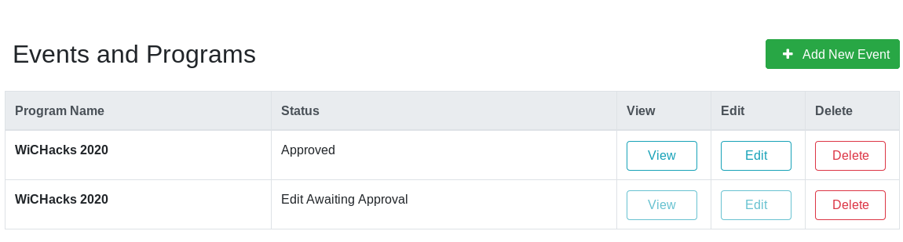

How to edit an existing Event¶
This page explains how to edit existing Events.
Requirements¶
In order to edit Events, you must be logged in as a Provider user, looking at the Provider Portal page. This also assumes you have at least one Event that is already approved.
1. Edit from event list¶
On the Provider Portal, view your list of submitted Events. Choose the one you want to change and click Edit:

Like with creating new Events, change details of your Event as needed. When done, click Validate Event near the lower-right corner. Once submitted, your Event edit awaits review by an Administrator.
2. Wait for Administrator approval¶
While your edit awaits review, you will see two copies of your Event, both with different statuses:

It is not recommended to edit an Event again while an edit is pending approval. While it is possible to edit an Event more than once, changes are not preserved across multiple edits. The full contents of the final edit approved (by an Administrator) is always the published version.
Once an edit is reviewed by an Administrator, the Provider receives an email notification of the status change. If approved, the Event edit is immediately displayed in the public site.